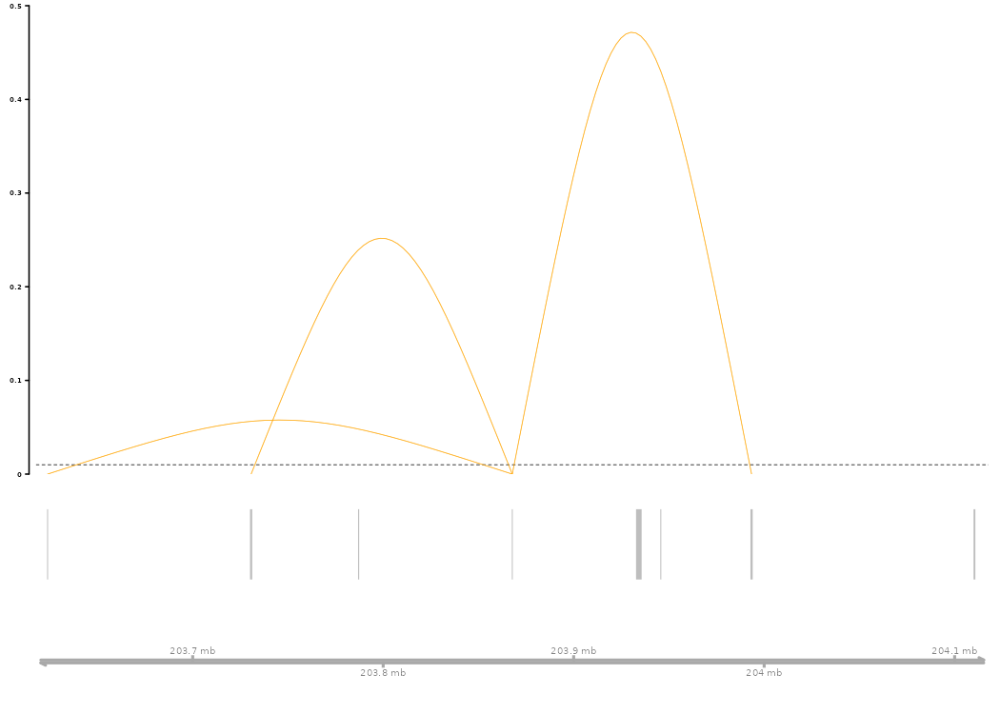
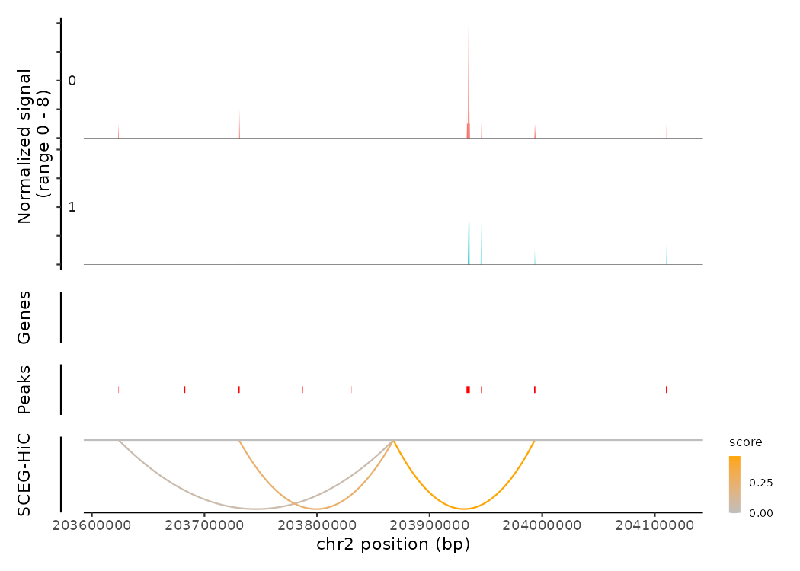

SCEG-HiC (Predicting enhancer-gene links from single-cell multi-omics data by integrating prior Hi-C information)
Overview
SCEG-HiC predicts enhancer–gene links by integrating multi-omics single-cell data (either paired scATAC-seq/RNA-seq or scATAC-seq alone) with three-dimensional chromatin conformation information derived from bulk average Hi-C data. It employs the weighted graphical lasso (wglasso) model to incorporate average bulk Hi-C data, effectively regularizing the correlation matrix with the prior Hi-C contact matrix as a penalty term.
Installation
Required software
SCEG-HiC runs in the R statistical computing environment. It requires R version 4.1.0 or higher, Bioconductor version 3.14 or higher, and Seurat 4.0 or higher to access the latest features.
To install Bioconductor, open an R session and run:
if (!requireNamespace("BiocManager", quietly = TRUE))
install.packages("BiocManager")
BiocManager::install(version = "3.14")Next, install a few Bioconductor packages that are not installed automatically:
BiocManager::install(c(
'BiocGenerics', 'DelayedArray', 'DelayedMatrixStats',
'limma', 'lme4', 'S4Vectors', 'SingleCellExperiment',
'SummarizedExperiment', 'batchelor', 'HDF5Array',
'terra', 'ggrastr', 'Gviz', 'rtracklayer', 'GenomeInfoDb', 'GenomicRanges'
))Installation of other dependencies
- Install the Signac pacakge:
devtools::install_github("timoast/signac", ref = "develop"). If you encounter any issues, please check the Signac documentation. - Install the Cicero package:
devtools::install_github("cole-trapnell-lab/cicero-release", ref = "monocle3"). If you encounter any issues, please check the Cicero installation guide.
Now, you can install the development version of SCEG-HiC from GitHub with:
# If you haven't installed devtools yet, uncomment and run:
# install.packages("devtools")
# Install the development version of SCEG-HiC from GitHub
devtools::install_github("wuwei77lx/SCEGHiC")If you prefer the stable release version from CRAN, run:
# Install the released version from CRAN
install.packages("SCEGHiC")Quickstart
This basic example demonstrates how to analyze paired scATAC-seq/RNA-seq data using SCEG-HiC:
library(SCEGHiC)
library(Signac)
# Load example multi-omics dataset
data(multiomic_small)
# Preprocess the data (aggregation)
SCEGdata <- process_data(multiomic_small, k_neigh = 5, max_overlap = 0.5)
#> Generating aggregated data
#> Aggregating cluster 0
#> Sample cells randomly.
#> There are 11 samples
#> Aggregating cluster 1
#> Sample cells randomly.
#> There are 11 samples
# Define genes of interest
gene <- c("TRABD2A", "GNLY", "MFSD6", "CTLA4", "LCLAT1", "NCK2", "GALM", "TMSB10", "ID2", "CXCR4")
# Get path to example average Hi-C data
fpath <- system.file("extdata", package = "SCEGHiC")
# Calculate Hi-C based weights for enhancer-gene pairs
weight <- calculateHiCWeights(SCEGdata, species = "Homo sapiens", genome = "hg38", focus_gene = gene, averHicPath = fpath)
#> Processing chromosome chr2...
#> Found 10 TSS loci on chr2.
#> Calculating Hi-C weights for gene TRABD2A...
#> Calculating Hi-C weights for gene GNLY...
#> Calculating Hi-C weights for gene MFSD6...
#> Calculating Hi-C weights for gene CXCR4...
#> Calculating Hi-C weights for gene CTLA4...
#> Calculating Hi-C weights for gene LCLAT1...
#> Calculating Hi-C weights for gene NCK2...
#> Calculating Hi-C weights for gene ID2...
#> Calculating Hi-C weights for gene GALM...
#> Calculating Hi-C weights for gene TMSB10...
#> Finished calculating Hi-C weights for all genes.
# Run the SCEG-HiC model
results_SCEGHiC <- Run_SCEG_HiC(SCEGdata, weight, focus_gene = gene)
#> Total predicted genes: 10
#> Running model for gene: TRABD2A
#> [1] "The optimal penalty parameter (rho) selected by BIC is: 0.43"
#> Running model for gene: GNLY
#> [1] "The optimal penalty parameter (rho) selected by BIC is: 0.19"
#> Running model for gene: MFSD6
#> [1] "The optimal penalty parameter (rho) selected by BIC is: 0.22"
#> Running model for gene: CXCR4
#> [1] "The optimal penalty parameter (rho) selected by BIC is: 0.14"
#> Running model for gene: CTLA4
#> [1] "The optimal penalty parameter (rho) selected by BIC is: 0.17"
#> Running model for gene: LCLAT1
#> [1] "The optimal penalty parameter (rho) selected by BIC is: 0.41"
#> Running model for gene: NCK2
#> [1] "The optimal penalty parameter (rho) selected by BIC is: 0.25"
#> Running model for gene: ID2
#> [1] "The optimal penalty parameter (rho) selected by BIC is: 0.13"
#> Running model for gene: GALM
#> [1] "The optimal penalty parameter (rho) selected by BIC is: 0.11"
#> Running model for gene: TMSB10
#> [1] "The optimal penalty parameter (rho) selected by BIC is: 0.44"
# Arc plot visualization predicted enhancer-gene links for CTLA4
connections_Plot(results_SCEGHiC, species = "Homo sapiens", genome = "hg38", focus_gene = "CTLA4", cutoff = 0.01, gene_anno = NULL)
# Load fragment data for coverage plotting
frag_path <- system.file("extdata", "multiomic_small_atac_fragments.tsv.gz", package = "SCEGHiC")
frags <- CreateFragmentObject(path = frag_path, cells = colnames(multiomic_small))
#> Computing hash
Fragments(multiomic_small) <- frags
# Coverage plot and visualize the links of CTLA4
coverPlot(multiomic_small, focus_gene = "CTLA4", species = "Homo sapiens", genome = "hg38",
assay = "peaks", SCEG_HiC_Result = results_SCEGHiC, SCEG_HiC_cutoff = 0.01)
#> Warning in .merge_two_Seqinfo_objects(x, y): The 2 combined objects have no sequence levels in common. (Use
#> suppressWarnings() to suppress this warning.)
Session Info
sessionInfo()
#> R version 4.4.2 (2024-10-31)
#> Platform: x86_64-conda-linux-gnu
#> Running under: Rocky Linux 9.6 (Blue Onyx)
#>
#> Matrix products: default
#> BLAS/LAPACK: /home/liangxuan/conda/envs/test/lib/libopenblasp-r0.3.28.so; LAPACK version 3.12.0
#>
#> locale:
#> [1] LC_CTYPE=en_US.UTF-8 LC_NUMERIC=C
#> [3] LC_TIME=en_US.UTF-8 LC_COLLATE=en_US.UTF-8
#> [5] LC_MONETARY=en_US.UTF-8 LC_MESSAGES=en_US.UTF-8
#> [7] LC_PAPER=en_US.UTF-8 LC_NAME=C
#> [9] LC_ADDRESS=C LC_TELEPHONE=C
#> [11] LC_MEASUREMENT=en_US.UTF-8 LC_IDENTIFICATION=C
#>
#> time zone: Asia/Shanghai
#> tzcode source: system (glibc)
#>
#> attached base packages:
#> [1] stats4 stats graphics grDevices utils datasets methods
#> [8] base
#>
#> other attached packages:
#> [1] harmony_1.2.3 Rcpp_1.0.14
#> [3] Matrix_1.6-5 dplyr_1.1.4
#> [5] EnsDb.Mmusculus.v79_2.99.0 SeuratDisk_0.0.0.9021
#> [7] hdf5r_1.3.12 ggplot2_3.5.1
#> [9] BSgenome.Hsapiens.UCSC.hg38_1.4.5 BSgenome_1.74.0
#> [11] rtracklayer_1.66.0 BiocIO_1.16.0
#> [13] Biostrings_2.74.1 XVector_0.46.0
#> [15] EnsDb.Hsapiens.v86_2.99.0 ensembldb_2.30.0
#> [17] AnnotationFilter_1.30.0 GenomicFeatures_1.58.0
#> [19] AnnotationDbi_1.68.0 Biobase_2.66.0
#> [21] GenomicRanges_1.58.0 GenomeInfoDb_1.42.1
#> [23] IRanges_2.40.1 S4Vectors_0.44.0
#> [25] BiocGenerics_0.52.0 Seurat_5.2.0
#> [27] SeuratObject_5.0.2 sp_2.1-4
#> [29] Signac_1.14.9001 SCEGHiC_0.0.0.9000
#>
#> loaded via a namespace (and not attached):
#> [1] fs_1.6.5 ProtGenerics_1.38.0
#> [3] matrixStats_1.5.0 spatstat.sparse_3.1-0
#> [5] bitops_1.0-9 httr_1.4.7
#> [7] RColorBrewer_1.1-3 tools_4.4.2
#> [9] sctransform_0.4.1 backports_1.5.0
#> [11] R6_2.5.1 lazyeval_0.2.2
#> [13] uwot_0.2.2 Gviz_1.50.0
#> [15] cicero_1.3.9 withr_3.0.2
#> [17] prettyunits_1.2.0 gridExtra_2.3
#> [19] progressr_0.15.1 textshaping_1.0.1
#> [21] cli_3.6.3 spatstat.explore_3.3-4
#> [23] fastDummies_1.7.4 sass_0.4.9
#> [25] labeling_0.4.3 slam_0.1-55
#> [27] spatstat.data_3.1-4 ggridges_0.5.6
#> [29] pbapply_1.7-2 systemfonts_1.1.0
#> [31] Rsamtools_2.22.0 foreign_0.8-88
#> [33] R.utils_2.12.3 dichromat_2.0-0.1
#> [35] parallelly_1.41.0 VGAM_1.1-12
#> [37] rstudioapi_0.17.1 RSQLite_2.3.9
#> [39] FNN_1.1.4.1 generics_0.1.3
#> [41] ica_1.0-3 spatstat.random_3.3-2
#> [43] interp_1.1-6 ggbeeswarm_0.7.2
#> [45] abind_1.4-8 R.methodsS3_1.8.2
#> [47] lifecycle_1.0.4 yaml_2.3.10
#> [49] SummarizedExperiment_1.36.0 SparseArray_1.6.0
#> [51] BiocFileCache_2.14.0 Rtsne_0.17
#> [53] grid_4.4.2 blob_1.2.4
#> [55] promises_1.3.2 crayon_1.5.3
#> [57] miniUI_0.1.1.1 lattice_0.22-6
#> [59] cowplot_1.1.3 KEGGREST_1.46.0
#> [61] pillar_1.10.1 knitr_1.49
#> [63] boot_1.3-31 rjson_0.2.23
#> [65] future.apply_1.11.3 codetools_0.2-20
#> [67] fastmatch_1.1-6 glue_1.8.0
#> [69] spatstat.univar_3.1-1 data.table_1.16.4
#> [71] Rdpack_2.6.2 vctrs_0.6.5
#> [73] png_0.1-8 spam_2.11-0
#> [75] gtable_0.3.6 assertthat_0.2.1
#> [77] cachem_1.1.0 xfun_0.50
#> [79] rbibutils_2.3 S4Arrays_1.6.0
#> [81] mime_0.12 reformulas_0.4.0
#> [83] survival_3.8-3 SingleCellExperiment_1.28.1
#> [85] RcppRoll_0.3.1 fitdistrplus_1.2-2
#> [87] ROCR_1.0-11 nlme_3.1-166
#> [89] usethis_3.1.0 bit64_4.5.2
#> [91] progress_1.2.3 filelock_1.0.3
#> [93] RcppAnnoy_0.0.22 rprojroot_2.0.4
#> [95] bslib_0.8.0 irlba_2.3.5.1
#> [97] vipor_0.4.7 KernSmooth_2.23-26
#> [99] rpart_4.1.24 colorspace_2.1-1
#> [101] DBI_1.2.3 Hmisc_5.2-2
#> [103] nnet_7.3-20 ggrastr_1.0.2
#> [105] tidyselect_1.2.1 bit_4.5.0.1
#> [107] compiler_4.4.2 curl_6.0.1
#> [109] httr2_1.0.7 htmlTable_2.4.3
#> [111] xml2_1.5.0 desc_1.4.3
#> [113] DelayedArray_0.32.0 plotly_4.10.4
#> [115] checkmate_2.3.2 scales_1.4.0
#> [117] lmtest_0.9-40 rappdirs_0.3.3
#> [119] stringr_1.5.1 digest_0.6.37
#> [121] goftest_1.2-3 minqa_1.2.8
#> [123] spatstat.utils_3.1-2 reader_1.0.6
#> [125] rmarkdown_2.29 RhpcBLASctl_0.23-42
#> [127] htmltools_0.5.8.1 pkgconfig_2.0.3
#> [129] jpeg_0.1-10 base64enc_0.1-3
#> [131] lme4_1.1-36 MatrixGenerics_1.18.1
#> [133] dbplyr_2.5.0 fastmap_1.2.0
#> [135] rlang_1.1.4 htmlwidgets_1.6.4
#> [137] UCSC.utils_1.2.0 shiny_1.10.0
#> [139] jquerylib_0.1.4 farver_2.1.2
#> [141] zoo_1.8-12 jsonlite_1.8.9
#> [143] BiocParallel_1.40.0 R.oo_1.27.0
#> [145] VariantAnnotation_1.52.0 RCurl_1.98-1.16
#> [147] magrittr_2.0.3 Formula_1.2-5
#> [149] GenomeInfoDbData_1.2.13 dotCall64_1.2
#> [151] patchwork_1.3.0 reticulate_1.40.0
#> [153] stringi_1.8.7 zlibbioc_1.52.0
#> [155] MASS_7.3-64 plyr_1.8.9
#> [157] parallel_4.4.2 listenv_0.9.1
#> [159] ggrepel_0.9.6 deldir_2.0-4
#> [161] splines_4.4.2 tensor_1.5
#> [163] hms_1.1.3 igraph_2.0.3
#> [165] spatstat.geom_3.3-4 RcppHNSW_0.6.0
#> [167] reshape2_1.4.4 biomaRt_2.62.0
#> [169] XML_3.99-0.17 evaluate_1.0.3
#> [171] latticeExtra_0.6-30 biovizBase_1.54.0
#> [173] NCmisc_1.2.0 nloptr_2.1.1
#> [175] tweenr_2.0.3 httpuv_1.6.15
#> [177] RANN_2.6.2 tidyr_1.3.1
#> [179] purrr_1.0.2 polyclip_1.10-7
#> [181] future_1.34.0 scattermore_1.2
#> [183] ggforce_0.4.2 monocle3_1.3.7
#> [185] xtable_1.8-4 restfulr_0.0.15
#> [187] RSpectra_0.16-2 roxygen2_7.3.3
#> [189] later_1.4.1 ragg_1.3.3
#> [191] glasso_1.11 viridisLite_0.4.2
#> [193] tibble_3.2.1 beeswarm_0.4.0
#> [195] memoise_2.0.1 GenomicAlignments_1.42.0
#> [197] cluster_2.1.8 globals_0.16.3See the documentation website for more information!
The bulk average Hi-C data
The human cell types used for averaging are based on 34 Hi-C datasets from the ENCODE project.
The mouse cell types used for averaging are: two embryonic stem cell types (mESC1, mESC2), CH12LX, CH12F3, fiber, epithelium, and B cells.
The bulk average Hi-C data can be generated using the Activity by Contact (ABC) model’s makeAverageHiC.py script.
Download Links for Average Hi-C Data
-
Human bulk average Hi-C (~54.1 GB)
Download from: ENCFF134PUN.bed.gz.
After downloading, extract the human bulk average Hi-C using the Activity by Contact (ABC) model’s extract_avg_hic.py script:
-
Mouse bulk average Hi-C (~13.9 GB)
Download from: 10.5281/zenodo.14849886.
For more details about bulk average Hi-C data, please visit: https://github.com/wuwei77lx/compare_model.
Example
In SCEG-HiC, you can choose either aggregation or single-cell retention approach:
Aggregation approach: Aggregates binarized scATAC-seq data across cell types using k-nearest neighbor smoothing to reduce data sparsity. This approach captures a broader spectrum of enhancer-gene links across cell types, with slightly reduced prediction accuracy.
Single-cell retention approach: Normalizes scATAC-seq data within individual cell types to individual cell signals. This method achieves higher precision and accuracy, albeit identifying fewer enhancer-gene links
Recommendation: To balance accuracy and coverage, we implemented both preprocessing strategies in SCEG-HiC, with aggregation designated as the default. The single-cell retention approach can be optionally used when higher precision within specific cell types is desired.
For more details and real data examples, please visit:
SCEG-HiC on paired scATAC-seq/RNA-seq data of PBMC (aggregation)
SCEG-HiC on paired scATAC-seq/RNA-seq data of mouse skin (aggregation)
SCEG-HiC on scATAC-seq data alone from human COVID-19 monocytes
Alternatively, when applying SCEG-HiC to a new tissue, the penalty strength can be adjusted using the alpha parameter (alpha * rho):
Increase alpha is suitable for tissues well represented in the datasets used to construct the bulk average Hi-C map, to allow greater reliance on prior Hi-C contact information.
Decrease alpha is preferable for more unique tissues or conditions, to reduce dependence on prior Hi-C contact information and emphasize single-cell data.
# Example: run SCEG-HiC with scaled penalty
results_SCEGHiC <- Run_SCEG_HiC(SCEGdata, weight, focus_gene = gene, alpha=1.5)Notes:
alpha = 1uses the original penalty (default).alpha > 1strengthens the penalty.alpha < 1weakens the penalty.
Help
If you have any questions, comments, or suggestions, please contact Xuan Liang at liangxuan2022@sinh.ac.cn.